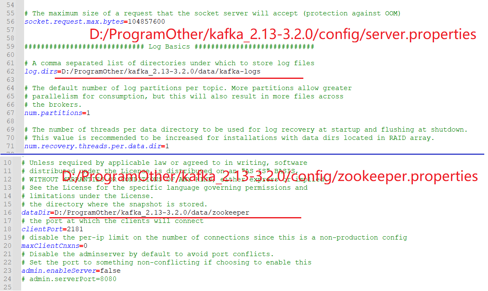
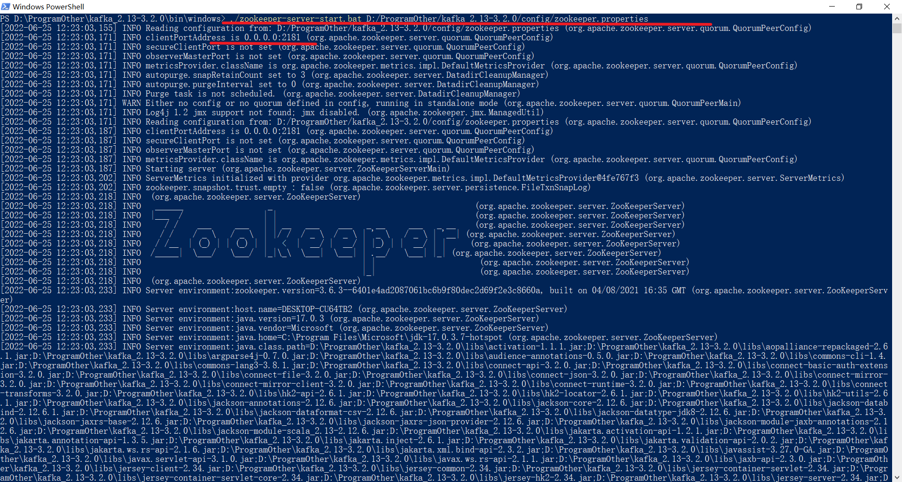
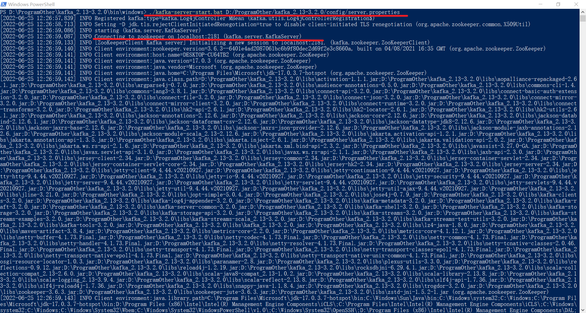
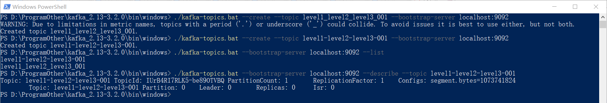
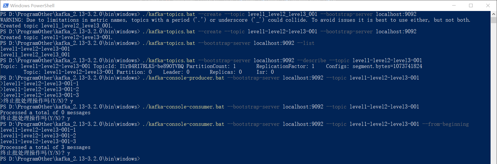

整理kafka相关知识点……
下载地址：Downloads - Apache Kafka、Index of /kafka
这里下载的是：
安装之前需要先准备好JAVA环境，可以参考：java - xiaodu114.github.io
绿色版，免安装的。压缩包放置目录是
在上面的解压目录中新建
之后修改

在
# 首先是 zookeeper
./zookeeper-server-start.bat D:/ProgramOther/kafka_2.13-3.2.0/config/zookeeper.properties
# 其次是 kafka
./kafka-server-start.bat D:/ProgramOther/kafka_2.13-3.2.0/config/server.properties


第一个
# 第一个 topics
./kafka-topics.bat --create --topic level1_level2_level3_001 --bootstrap-server localhost:9092
# 第二个 topics
./kafka-topics.bat --create --topic level1-level2-level3-001 --bootstrap-server localhost:9092
新建完了之后，查看一下
# 列出全部
./kafka-topics.bat --bootstrap-server localhost:9092 --list
# 查看某一个
./kafka-topics.bat --bootstrap-server localhost:9092 --describe --topic level1-level2-level3-001

WARNING: Due to limitations in metric names, topics with a period ('.') or underscore ('_') could collide. To avoid issues it is best to use either, but not both.
都准备好了，开始干活了。
# 生产消息
./kafka-console-producer.bat --bootstrap-server localhost:9092 --topic level1-level2-level3-001
# 消费消息
./kafka-console-consumer.bat --bootstrap-server localhost:9092 --topic level1-level2-level3-001 --from-beginning

如果你是先启动的